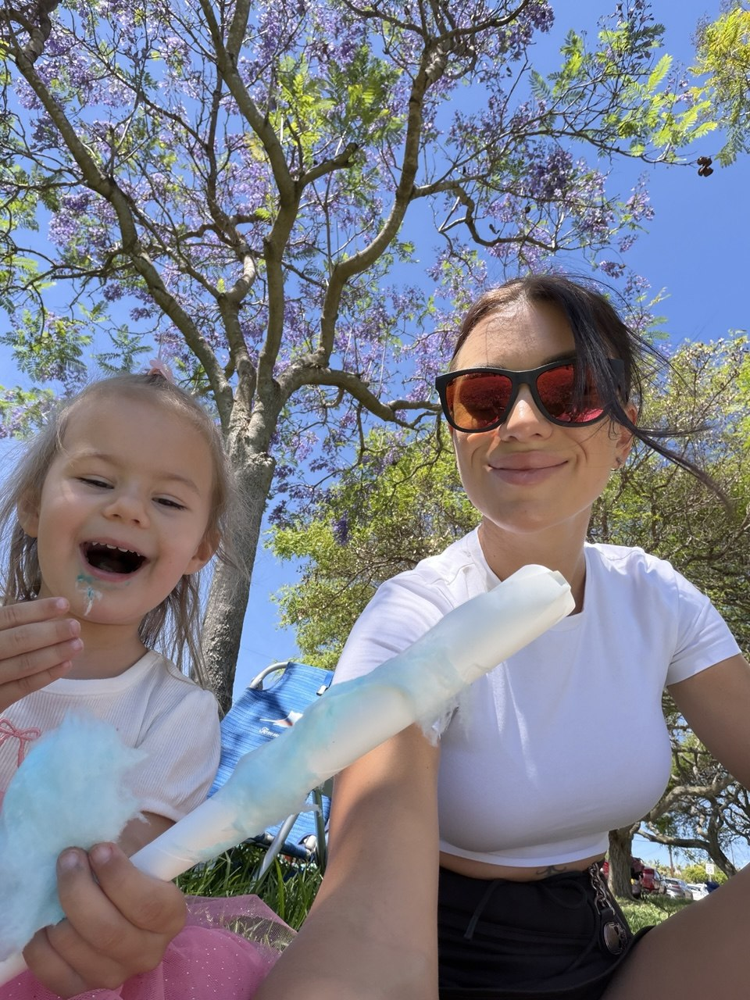
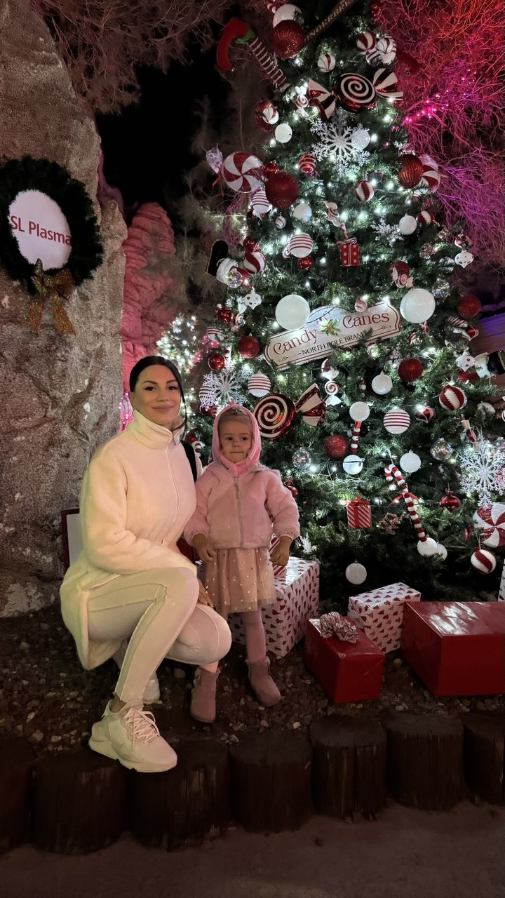
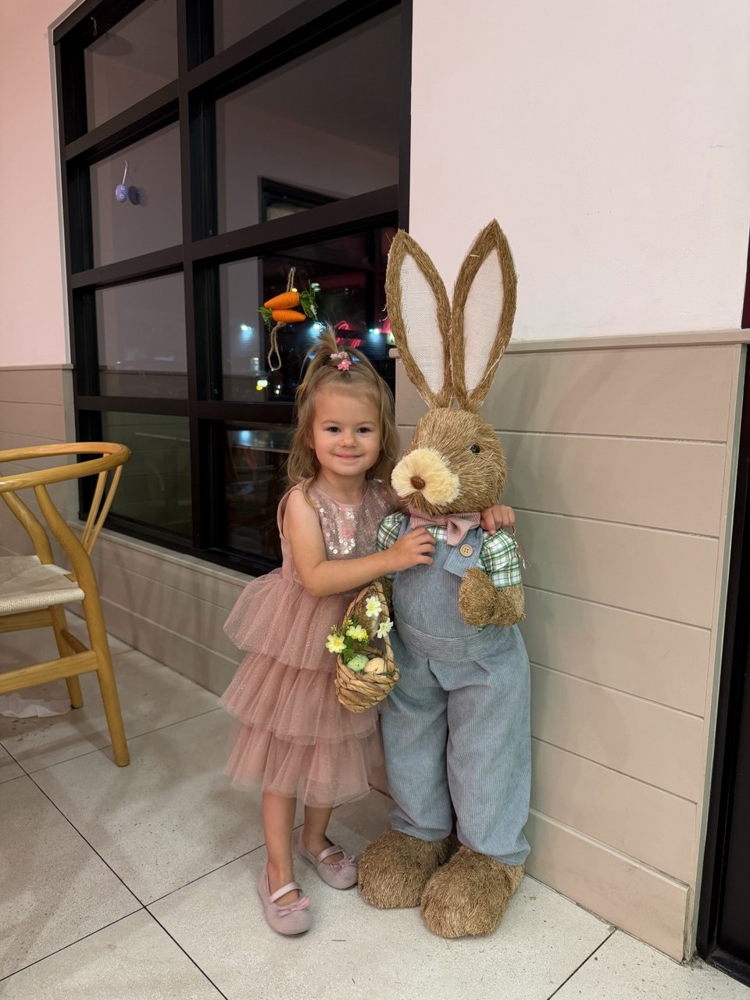

My Story
My name is Victoria Prisna, and I came to the United States from Ukraine about four years ago. Since moving here, I have been working hard to build a new life for myself and my daughter, Alexandra. Starting over in a new country has not always been easy, but it has taught me how strong, determined, and adaptable I can be.
I studied programming before, but at that time I started and then stopped because it felt overwhelming. Now I have returned to web development with a new mindset, and it feels much more achievable. Today there are many helpful tools and learning resources, and I already created and launched my first website for a small business in San Diego, which made me feel proud and more confident.
This summer will be my final semester, and I expect to earn my Associate of Science degree in Web Development. After that, I want to continue my education and transfer to a university in San Diego. I am still deciding on my future specialization. I have been very interested in cybersecurity and also in AI, but for now I feel especially connected to web development, design, and user experience.


Goals, Design, and Creativity
What I enjoy most about web development is the combination of code and design. I believe many websites may function correctly but still look unattractive or confusing. Good design is a big part of success because writing code is only one side of the process. Creating a website that feels elegant, clear, and pleasant to use requires taste, visual balance, and attention to the user’s experience.
I probably love design even more than coding, but I truly enjoy combining both. I am interested in layout, visual structure, and the way content is presented on a page. In the future, I may want to work not only with websites, but also with editorial layouts, magazine pages, or other digital design projects that require both technical and creative skills.
- Web development and front-end design
- User experience and visual layout
- Future university transfer plans
- Interest in AI and creative digital work
My Daughter Alexandra
My daughter Alexandra is three years old, and she is the most important person in my life. I am a single mother, so my time is very valuable, and I always try to spend as much of it with her as possible. I feel that this age is one of the sweetest and most special stages of childhood, and I want to enjoy every moment with her.
Alexandra brings joy, energy, and meaning to everything I do. She is one of the biggest reasons I keep moving forward and working toward a better future. Building a stable life, finishing school, and growing professionally are not only goals for me, but also a way to create more opportunities and security for her.
- Spend quality time with Alexandra
- Finish my degree successfully
- Build a creative and stable future
